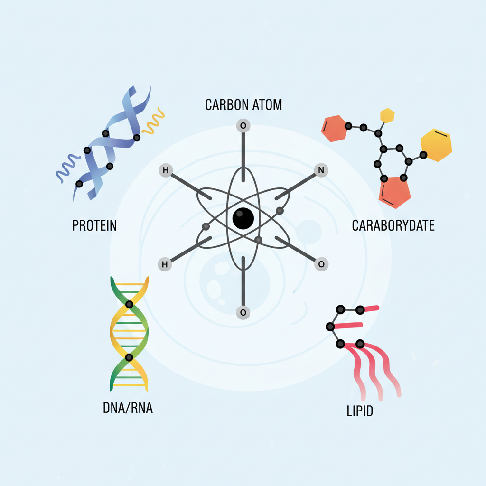
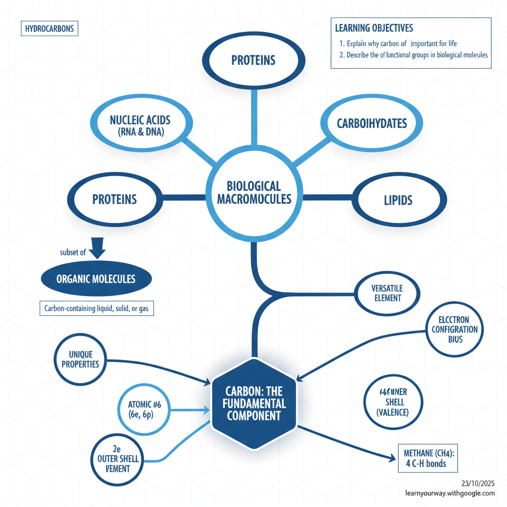

Interactive Lesson:
The Role of Carbon in Biology
Welcome to your interactive study kit. Explore the fundamental concepts, test your knowledge, and dive deep into why carbon is the backbone of life.
Summary & Key Points

This document introduces the fundamental role of carbon in biological molecules. It explains why carbon is essential for life, detailing its unique bonding properties that allow it to form complex macromolecules like proteins, DNA, carbohydrates, and lipids.
Top 5 Key Takeaways
- Carbon is the backbone of life: It's the fundamental component of all biological macromolecules essential for cells.
- Versatile bonding: Carbon atoms can form up to four covalent bonds, making them ideal for creating the complex structures of macromolecules.
- Stability through octet rule: Carbon's ability to form four bonds allows it to satisfy the octet rule, resulting in stable compounds.
- Macromolecules are carbon-based: Proteins, nucleic acids (RNA/DNA), carbohydrates, and lipids are all organic (carbon-containing) molecules vital for life.
- Organic molecules are diverse: Any carbon-containing liquid, solid, or gas is considered an organic molecule, with macromolecules being a critical subset.
Related Videos to Explore
For the point: Carbon is the backbone of life.
For the point: Versatile bonding.
For the point: Macromolecules are carbon-based.
See also: Outline, Glossary
Document Outline
A hierarchical outline of the document's main topics and sub-topics, structured for a mind map.
- Carbon: The Foundation of Life's Molecules
- Learning Objectives
- Explain why carbon is important for life
- Describe the role of functional groups in biological molecules
- Biological Macromolecules
- Examples:
- Proteins
- Nucleic Acids (RNA, DNA)
- Carbohydrates
- Lipids
- Comprise cells
- Subset of Organic Molecules
- Organic Molecules
- Definition: Any carbon-containing liquid, solid, or gas
- Especially important for life
- The Carbon Atom
- Fundamental component ("backbone") of macromolecules
- Unique properties
- Versatile element
- Carbon's Bonding Capabilities
- Atomic Structure:
- Atomic number: 6 (6 electrons, 6 protons)
- Electron shells: 2 (inner), 4 (second/outer)
- Incomplete outermost shell
- Bonding Mechanism:
- Forms up to four covalent bonds
- Satisfies the octet rule
- Example: Methane (CH4)
- Four hydrogen atoms
- Each forms a single covalent bond with carbon
- Achieves filled outermost shell by sharing electrons
For a more detailed explanation, see the Detailed Study Guide.
Detailed Study Guide
Here is a detailed and comprehensive explanation of the key topics, concepts, and themes from the document, structured as a study guide.
1. Learning Objectives
By the end of this section, you should be able to:
- Explain why carbon is important for life: Understand the fundamental reasons carbon is chosen as the structural basis for biological molecules.
- Describe the role of functional groups in biological molecules: (While the document mentions this objective, it does not detail functional groups. This indicates it will be covered in subsequent sections.)
2. Macromolecules: The Building Blocks of Cells
Cells are composed of a vast array of intricate and large molecules known as macromolecules. These are complex organic molecules that perform various crucial functions within an organism.
- Examples of Macromolecules:
- Proteins: Essential for structure, function, and regulation of the body's tissues and organs.
- Nucleic Acids (RNA and DNA): Carry genetic information and are vital for heredity and protein synthesis.
- Carbohydrates: Primary source of energy for the body.
- Lipids: Serve as energy stores, structural components of cell membranes, and signaling molecules.
These macromolecules are all fundamentally built upon a carbon framework, highlighting carbon's central role in biochemistry.
3. Organic Molecules: Carbon's Broad Category
The term organic molecules refers to any liquid, solid, or gas that contains carbon. While this definition is broad, macromolecules are a specialized and crucial subset of organic molecules that are explicitly important for life processes. The study of organic molecules and their reactions is known as organic chemistry, a field directly underpinning biochemistry.
4. Carbon: The "Backbone" of Life
The single most important element forming the basis of all biological macromolecules is carbon. Its unique atomic properties make it exceptionally versatile and ideal to serve as the basic structural component, or "backbone," for these complex compounds. Without carbon's ability to form diverse and stable structures, the intricate chemistry of life as we know it would not exist.
5. Carbon's Unique Bonding Properties
The versatility of carbon stems directly from its atomic structure and its capacity to form stable chemical bonds.
5.1. Atomic Structure and Electron Configuration
- Atomic Number: Carbon has an atomic number of 6, meaning it possesses six protons and six electrons.
- Electron Shells:
- The first (innermost) electron shell holds two electrons.
- The second (outermost) electron shell contains the remaining four electrons. This outer shell is considered incomplete.
5.2. Forming Covalent Bonds to Satisfy the Octet Rule
Because its outermost shell has only four electrons, carbon needs to gain or share four more electrons to achieve a stable configuration of eight electrons in its outer shell (known as the octet rule).
- Covalent Bonding: Carbon achieves this stability by forming covalent bonds, where it shares pairs of electrons with other atoms.
- Four Bonds: Crucially, carbon atoms can form up to four covalent bonds with other atoms. This allows carbon to link with a wide variety of other atoms, including other carbon atoms, to create long chains, rings, and branched structures, forming the complex skeletons of biological molecules.
5.3. Example: Methane (CH4)
The methane molecule provides a simple illustration of carbon's bonding capacity:
- Chemical Formula: CH4
- Bonding: Each of the four hydrogen atoms forms a single covalent bond with the central carbon atom. They achieve this by sharing a pair of electrons.
- Result: This sharing results in a filled outermost shell for both the carbon and hydrogen atoms, achieving chemical stability.
Mind Map Visualization
A visual representation of the key concepts and their relationships.

Quizzes
Test your understanding of the material.
True/False Practice
1. Macromolecules are a subset of organic molecules. View Answer
Correct Answer: True. The document states they are a subset especially important for life.
2. A carbon atom has a complete outermost electron shell. View Answer
Correct Answer: False. It has four electrons in its outer shell, which is incomplete.
Short Answer Practice
Explain how carbon's atomic structure and bonding capabilities enable it to play a central structural role in complex biological molecules.